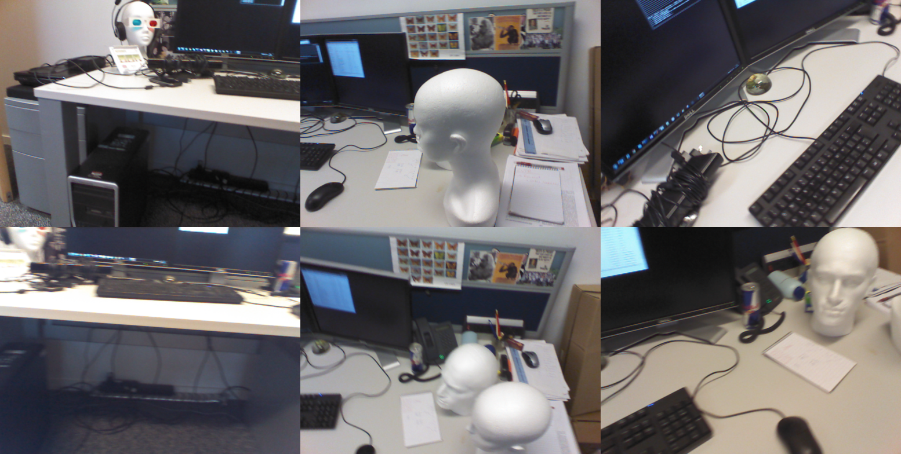
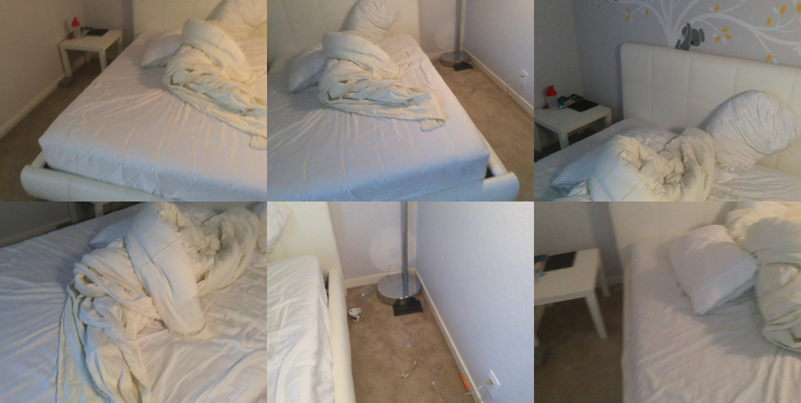
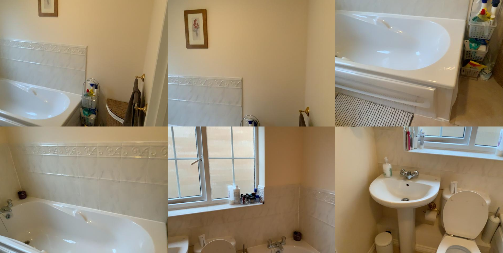
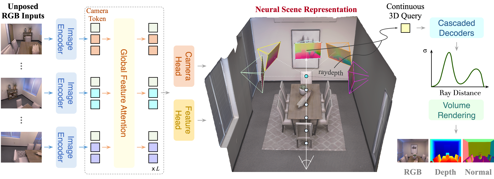
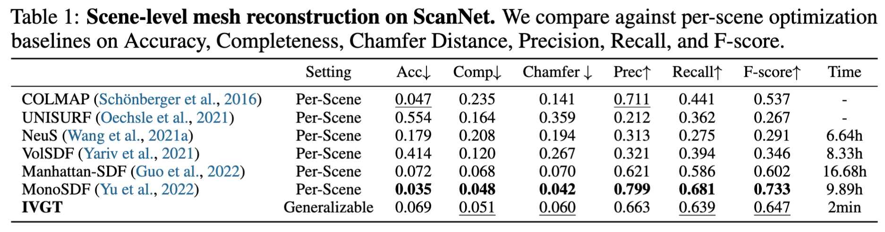
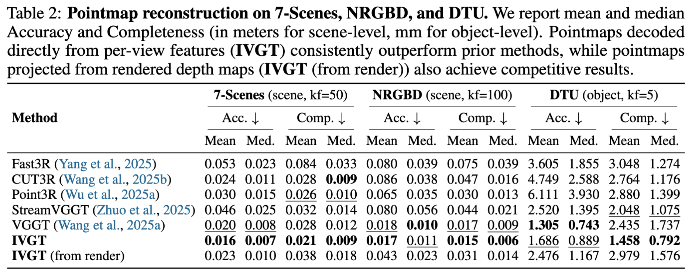
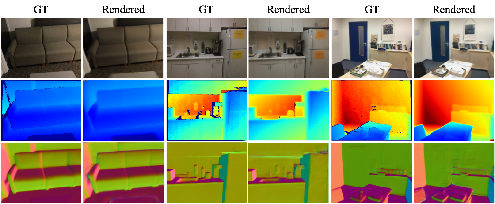
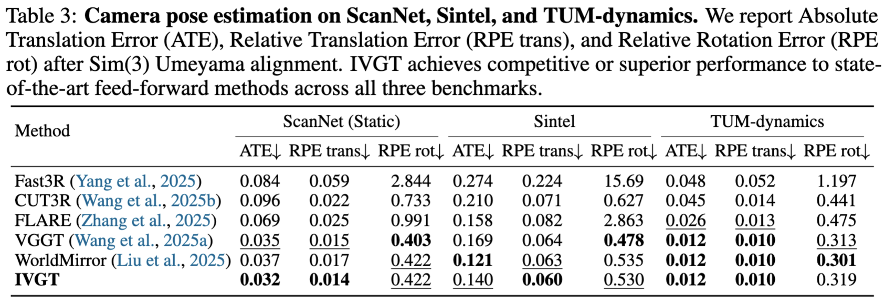

The advantage of implicit geometry over explicit pointmaps is most visible in surface quality. Pixel-aligned pointmap reconstruction suffers from sparsity and discontinuities, especially at object boundaries, while meshes extracted from IVGT's continuous SDF field are significantly more coherent and complete. Below we compare the dense 3D reconstruction results of IVGT (Ours) against VGGT.



Reconstructing coherent 3D geometry and appearance from unposed multi-view images is a fundamental yet challenging problem in computer vision. Most existing visual geometry foundation models predicts explicit geometry by regressing pixel-aligned pointmaps, often suffering from redundancy and limited geometric continuity. We propose IVGT, an Implicit Visual Geometry Transformer that implicitly model continous and coherent geometry from pose-free multi-view images. This formulation learns a continuous neural scene representation in a canonical coordinate system and supports continuous spatial queries at any 3D positions, retrieving local features to predict signed distance (SDF) values and colors using lightweight decoders. It allows direct extraction of continuous and coherent surface geometry, enabling rendering of RGB images, depth maps, and surface normal maps from arbitrary viewpoints. We train IVGT via multi-dataset joint optimization with 2D supervision and 3D geometric regularization. IVGT deonstrates generalization across scenes and achieves strong performance on various tasks including mesh and point cloud reconstruction, novel view synthesis, depth and surface normal estimation, and camera pose estimation.
IVGT takes pose-free multi-view images as input and encodes them into per-view features, which are aggregated via global feature attention into a unified scene representation in a canonical coordinate system. This representation supports continuous 3D queries, where cascaded decoders predict SDF and colors for volume rendering and surface extraction. We additionally decode camera poses and per-view depth maps for the input views.

IVGT produces geometrically complete and surface-coherent meshes in a single forward pass, achieving comparable or superior reconstruction quality to per-scene optimization baselines. Our method generalizes across indoor scenes and objects of varying scale, producing geometrically complete and visually consistent colored meshes without any test-time optimization.



IVGT estimates the relative poses of input images with respect to the first-frame coordinate system and predicts depth maps from the corresponding image features. These depth maps are then used to reconstruct point maps of the input views within the first-frame coordinate system. In addition, we can render depth maps for the input viewpoints from the learned neural scene representation. These rendered depth maps similarly allow us to obtain pointmap reconstructions under the same coordinate system. We evaluate the quality of pointmap reconstruction on both scene-level and object-level datasets. Pointmaps decoded directly from per-view features (IVGT) consistently outperform prior methods, while pointmaps projected from rendered depth maps (IVGT (from render)) also achieve competitive results.


Given pose-free multi-view inputs, IVGT renders RGB images, depth maps, and surface normal maps from unseen viewpoints. The outputs are visually coherent and geometrically smooth, confirming that the unified implicit representation captures both appearance and 3D structure. All three modalities are derived from the same SDF field without any task-specific decoding heads, demonstrating the versatility of our continuous implicit geometry.

We also evaluate the camera pose estimation performance on ScanNet, Sintel and TUM-dynamics. We report Absolute Translation Error (ATE), Relative Translation Error (RPE trans), and Relative Rotation Error (RPE rot) after applying a Sim(3) Umeyama alignment with the ground truth. Our method achieves comparable or even superior performance to representative feed-forward approaches on camera pose estimation metrics across multiple datasets.
